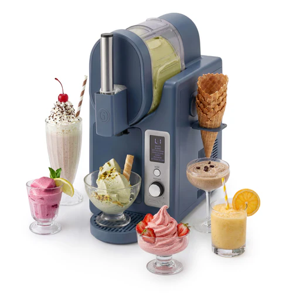

Общие моменты

Посмотреть на машинку, которую я использую можно на официальном сайте. Там же можно найти много оригинальных рецептов.
Классическое мягкое ванильное мороженое
Приготавливаем смесь:
- Молоко цельное 3.2% жирности - 400 мл
- Сливки для взбивания 38-40% жирности - 100 мл
- Сироп - 100 мл
- Экстракт ванилина - 1-2 чайные ложки (по вкусу)
- Сахар - 50 гр.
Всё тчательно перемешиваем до полного расворения сахара. Заливаем в машинку.
Выбираем режим Soft Icecream и выбирам консистенцию Level: 4.
Время работы машинки до готовности 35-40 минут.
Классическое мягкое ванильное мороженое улучшенный вариант
Приготавливаем смесь:
- Молоко цельное 3.2% жирности - 380 мл
- Сливки для взбивания 33-38% жирности - 120 мл
- Молоко сухое - 30 г
- Karo Light Corn Syrup - 40 г
- Экстракт ванилина WATKINS - 1-2 чайные ложки (по вкусу)
- Сахар коричневый - 50 гр.
- Allulose (100%) - 30 г
- Соль мелкая - 1гр. (пока забыл)
Соедините в сотейнике все ингредиенты, кроме экстракта ванили.
Нагрейте смесь до 70-75°C при постоянном помешивании, до полного растворения сухих компонентов.
Снимите с огня и вмешайте экстракт ванили.
Охладите смесь до комнатной температуры.
Накройте емкость и уберите в холодильник на 2–4 часа (до температуры 4°C или ниже)
Выбираем режим Soft Icecream и выбирам консистенцию Level: 4.
Время работы машинки до готовности 35-40 минут.
Классический молочный коктейль
Приготавливаем смесь:
- Молоко цельное (3.2% жирности) - 400 мл
- Сливки для взбивания (33-38% жирности) - 80 мл
- Экстракт ванилина WATKINS - 1-2 чайные ложки (по вкусу)
- Сахар белый - 50 гр.
Смесь тчательно перемешиваем, чтобы растворился сахар.
Смесь вливаем в машину.
Выбираем режим Milkshake и выбирам консистенцию Level: 3.
Время работы машинки до готовности: 20-25 минут.
В готовый молочный коктейль добавляем сироп по вкусу. Я использую сиропы:
- IKEA DRYCK BLÅBÄR, Blueberry syrup, черничный сироп
- IKEA DRYCK LINGON, Lingonberry syrup, брусничный сироп
- IKEA DRYCK FLÄDER, Elderflower syrup, сироп из цветов бузины